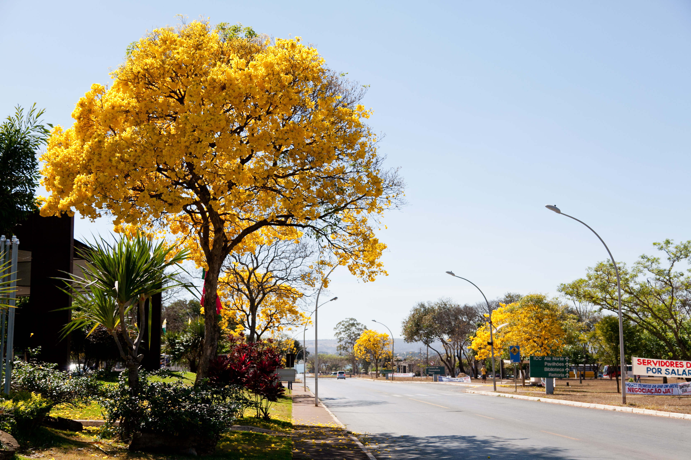

<!-- <div class="posts">
  {% for post in site.categories.researches %}
    <article class="post">

      <h1><a href="{{ site.baseurl }}{{ post.url }}">{{ post.title }}</a></h1>

      <div class="entry">
        {{ post.excerpt }}
      </div>

      <a href="{{ site.baseurl }}{{ post.url }}" class="read-more">Read More</a>
    </article>
  {% endfor %}
</div> -->
<!--

<!--  <figure> -->
<!--   
<!--   height="auto" > -->
<!--   <figcaption>Fig: My hometown Brasília (Brazil) seen from above (Divulgação/Setur). </figcaption> -->
<!-- </figure>  -->
<figure>
  
  <figcaption>
    Fig.: An Ipê-amarelo close to the Cathedral of Brasília, my hometown. The blossoming of these trees typically takes place from late May to October, coloring the scenery in white, yellow, pink and purple.
  </figcaption>
</figure>
